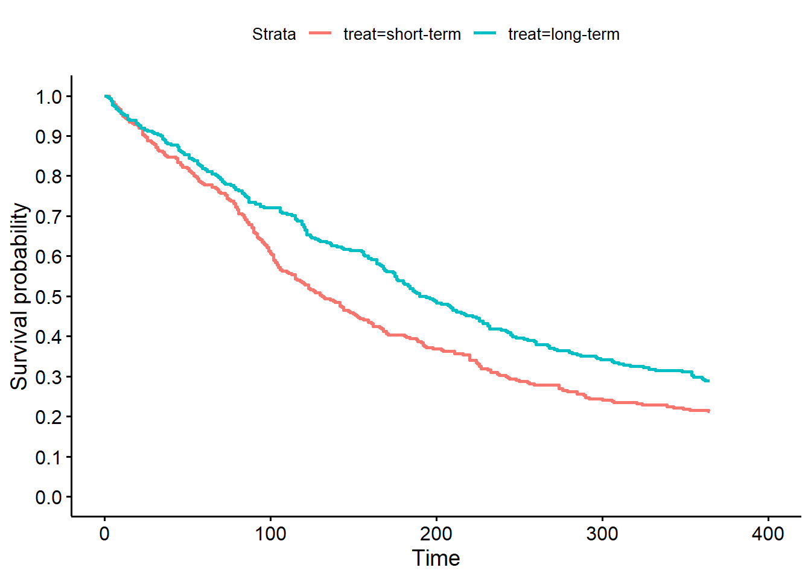

# load libraries needed for analyses
library(tidyverse)
library(survival)
library(survminer)
library(jtools)ASSIGNMENT 6
# load data from working directory, and look at an overview of the dataset
load("umaru.Rdata")
# treatment group counts
table(umaru$treat)
short-term long-term
320 308 # first, let's focus on relapses in first year after rehab
# will need to truncate the time at 365, and censor anyone with
# a time (either relapse or censoring) > 365 at 365
umaru<-umaru%>%
mutate(relapse365= ifelse(is.na(relapse),NA, ifelse(time>365,0, relapse)))%>%
mutate(time365= ifelse(is.na(time),NA, ifelse(time>365,365, time))) # create survival object with Surv
umaru<-umaru%>%mutate(survobject=Surv(time365, relapse365 == 1)) # KM curves and simple Cox regressions
# treatment type (long-term versus short-term)
kmtrt<-survfit(survobject ~treat, data = umaru)
ggsurvplot(kmtrt,conf.int = F, risk.table = FALSE, censor=F,
ylim=c(0,1),
break.y.by = 0.05)
coxtreat<- coxph(survobject ~ treat, data = umaru)
tidy(coxtreat, conf.int=TRUE, exponentiate =TRUE)| term | estimate | std.error | statistic | p.value | conf.low | conf.high |
|---|---|---|---|---|---|---|
| treatlong-term | 0.7567019 | 0.0925619 | -3.011885 | 0.0025963 | 0.631155 | 0.9072222 |
#### binning and poisson regression
### Create the binning variable in (roughly) 1 month increments
umaru<-umaru%>%
mutate(tbin = tcut(rep(0, nrow(umaru)),
breaks=c(0,30,60,90,120,150,180,210,240,270,300,330,365))) ### Create the rates table
pyearsObj = pyears(survobject ~ tbin+treat , data.frame=TRUE,
scale=1,data=umaru)
ratesData = pyearsObj$data
ratesData<-ratesData%>%mutate(offset=log(pyears))# poisson model 1: assuming constant rate over follow-up
pois1 <- glm(event ~treat + offset(log(pyears)), poisson, data=ratesData)
summ( pois1, exp=TRUE, confint = getOption("summ-confint", TRUE),digits = getOption("jtools-digits", 4))| Observations | 24 |
| Dependent variable | event |
| Type | Generalized linear model |
| Family | poisson |
| Link | log |
| χ²(1) | 9.3265 |
| Pseudo-R² (Cragg-Uhler) | 0.3226 |
| Pseudo-R² (McFadden) | 0.0616 |
| AIC | 146.0110 |
| BIC | 148.3671 |
| exp(Est.) | 2.5% | 97.5% | z val. | p | |
|---|---|---|---|---|---|
| (Intercept) | 0.0046 | 0.0040 | 0.0052 | -85.5839 | 0.0000 |
| treatlong-term | 0.7545 | 0.6296 | 0.9043 | -3.0489 | 0.0023 |
| Standard errors: MLE |
# poisson assuming ln(risk) linear with time
pois2 <- glm(event ~treat +as.numeric(tbin)+ offset(log(pyears)),
poisson, data=ratesData)
summ( pois2, exp=TRUE, confint = getOption("summ-confint", TRUE),
digits = getOption("jtools-digits", 4))| Observations | 24 |
| Dependent variable | event |
| Type | Generalized linear model |
| Family | poisson |
| Link | log |
| χ²(2) | 11.7859 |
| Pseudo-R² (Cragg-Uhler) | 0.3887 |
| Pseudo-R² (McFadden) | 0.0779 |
| AIC | 145.5516 |
| BIC | 149.0858 |
| exp(Est.) | 2.5% | 97.5% | z val. | p | |
|---|---|---|---|---|---|
| (Intercept) | 0.0051 | 0.0042 | 0.0061 | -57.8510 | 0.0000 |
| treatlong-term | 0.7610 | 0.6347 | 0.9123 | -2.9521 | 0.0032 |
| as.numeric(tbin) | 0.9782 | 0.9515 | 1.0057 | -1.5567 | 0.1196 |
| Standard errors: MLE |
# poisson assuming consistent rate within each month of follow-up
pois3 <- glm(event ~treat +tbin+ offset(log(pyears)), poisson, data=ratesData)
summ( pois3, exp=TRUE, confint = getOption("summ-confint", TRUE),digits=getOption("jtools-digits", 4))| Observations | 24 |
| Dependent variable | event |
| Type | Generalized linear model |
| Family | poisson |
| Link | log |
| χ²(12) | 24.9059 |
| Pseudo-R² (Cragg-Uhler) | 0.6469 |
| Pseudo-R² (McFadden) | 0.1646 |
| AIC | 152.4316 |
| BIC | 167.7463 |
| exp(Est.) | 2.5% | 97.5% | z val. | p | |
|---|---|---|---|---|---|
| (Intercept) | 0.0043 | 0.0034 | 0.0056 | -42.6879 | 0.0000 |
| treatlong-term | 0.7571 | 0.6315 | 0.9077 | -3.0059 | 0.0026 |
| tbin 30+ thru 60 | 0.9687 | 0.6835 | 1.3728 | -0.1790 | 0.8579 |
| tbin 60+ thru 90 | 1.1781 | 0.8374 | 1.6574 | 0.9410 | 0.3467 |
| tbin 90+ thru 120 | 1.3010 | 0.9194 | 1.8412 | 1.4854 | 0.1374 |
| tbin120+ thru 150 | 1.0551 | 0.7181 | 1.5503 | 0.2732 | 0.7847 |
| tbin150+ thru 180 | 1.1907 | 0.8103 | 1.7497 | 0.8888 | 0.3741 |
| tbin180+ thru 210 | 1.1010 | 0.7293 | 1.6620 | 0.4578 | 0.6471 |
| tbin210+ thru 240 | 1.2493 | 0.8275 | 1.8859 | 1.0592 | 0.2895 |
| tbin240+ thru 270 | 0.9239 | 0.5712 | 1.4945 | -0.3226 | 0.7470 |
| tbin270+ thru 300 | 0.9738 | 0.5969 | 1.5888 | -0.1061 | 0.9155 |
| tbin300+ thru 330 | 0.5566 | 0.2943 | 1.0525 | -1.8026 | 0.0715 |
| tbin330+ thru 365 | 0.6458 | 0.3632 | 1.1481 | -1.4895 | 0.1364 |
| Standard errors: MLE |